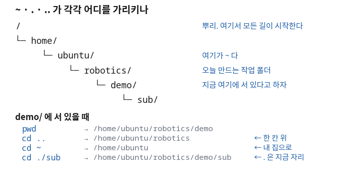
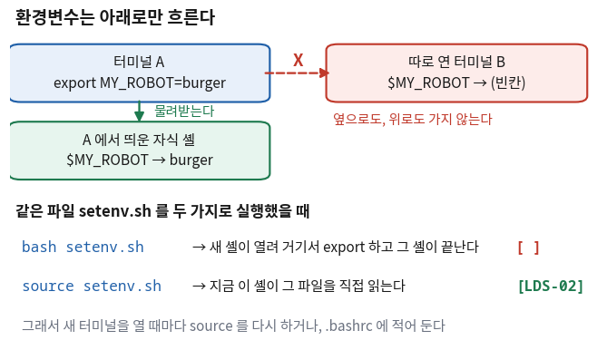
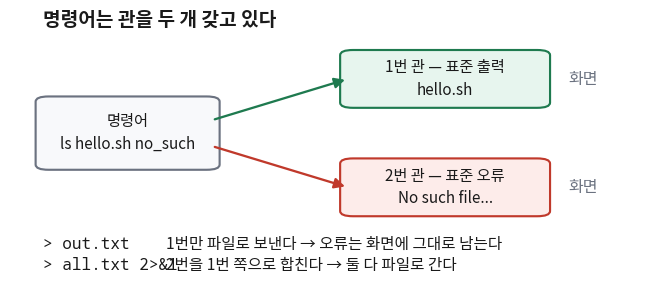

리눅스 명령어 — 손에 익힐 것과 알고 나서 시킬 것
- 리눅스 명령어가 수백 개다. 그중 무엇을 외워야 하나?
- 파일을 편집기 없이 터미널에서 바로 만들려면 어떻게 하나?
- 만든 스크립트를 실행했더니
Permission denied가 났다. 파일은 분명히 있다. 무슨 뜻인가? - 설정은 분명히 끝났는데, 새 터미널을 열면 그 값이 없다. 왜인가?
- 화면에 뜬 글자를 파일로 저장했는데 오류 메시지만 화면에 그대로 남는다. 왜인가?
- 프로그램이
Ctrl+C로 안 죽는다. 그다음에 무엇을 하나?
리눅스 명령어를 정리한 자료가 하나 있다. 537줄이고 명령어가 서른 개쯤 나온다. 그대로 읽으면 70분이 다 간다. 그리고 다음 주에 대부분 잊는다. 그렇다고 하나도 안 하면 터미널 앞에서 손이 멈춘다.
이 회차의 기준 한 줄
간단한 것은 내가 직접 칠 수 있어야 하고, 복잡한 것은 무엇을 하는 것인지 개념으로 이해한 다음에 시킨다.
앞의 절반이 왜 필요한가. 사람은 자기가 모르는 것을 시킬 때 머뭇거린다.
cd가 무엇을 하는지 모르는 사람은 "폴더 옮겨 줘"라고도 잘 못 시킨다.
돌아온 결과가 맞는지 아닌지 판단할 수가 없기 때문이다.
손으로 쳐 본 명령만이 시킬 수 있는 명령이 된다.
그래서 오늘은 ①에서 ⑧까지를 전부 손으로 친다. 여기에는 시키는 이야기가 나오지 않는다. 그다음 ⑨절에서 손으로 치기 시작하면 실수가 나는 명령 네 가지를 보고, 그것을 문장으로 바꾸는 자리를 만든다.
오늘 자료는 위에서 아래로 그대로 따라 치면 끝까지 이어진다. 앞 절에서 만든 폴더와 파일을 뒤 절에서 계속 쓴다. 중간을 건너뛰면 뒤에서 파일이 없다.
한 장 요약 — 세 층으로 나눈다
무엇을 먼저 볼지: 맨 오른쪽 열이다. 위 두 층은 오늘 손으로 다 쳐 보고, 아래층만 문장으로 바꾼다.
| 층 | 무엇 | 어떻게 대하나 |
|---|---|---|
| ⌨ 손에 익힐 기본 (①②③절) |
pwd cd ls mkdir cp mv rm echo cat > |
오늘 한 번씩 다 쳐 본다. 매일 쓰므로 곧 손에 붙는다 |
| 🔴 뜻까지 알아야 하는 다섯 (④~⑧절) |
경로 · 실행 권한 · 환경변수 · 표준 출력/오류 · 프로세스 | 모르면 학기 내내 같은 자리에서 막힌다. 오늘의 알맹이 |
| 🟢 알고 나서 시키는 것 (⑨절) |
조건이 여럿 붙은 find, 여러 파일 속 grep, 파이프 세 개짜리 한 줄, 이름 일괄 변경 |
무엇을 하는 것인지 안 다음에 문장으로 시키고 결과를 내가 확인한다 |
ls가 틀리면 화면을 보면 바로 안다. 그런데 find 한 줄에 조건이 네 개 붙으면
빠진 파일이 있어도 화면에 안 나타난다. 그래서 아래층은 결과를 따로 확인해야 하고,
확인할 줄 알려면 그 명령이 무엇을 하는 것인지는 알고 있어야 한다.
가운데 다섯 중에서도 환경변수(⑥절) 하나가 남은 27회차 내내 따라다닌다.
아래 출력은 전부 실제로 실행해서 얻은 것이다.
돌린 곳: 컨테이너(우분투 24.04.4 LTS, 사용자 이름 ubuntu).
그래서 경로가 /home/ubuntu/…로 찍힌다.
여러분의 WSL에서는 그 자리가 자기 계정 이름으로 바뀔 뿐 모양은 똑같다.
① 경로와 이동 — pwd와 cd 🔴 사람이 한다
무엇이 궁금한가
파일을 하나 만들었다. 그런데 어디에 만들어졌는지를 모른다. 터미널은 언제나 어느 한 폴더 안에 서 있는 상태이고, 모든 명령은 그 자리를 기준으로 실행된다. 이름만 적은 명령은 전부 「지금 서 있는 자리에서」라는 말이 앞에 생략된 것이다. 그러니 첫 질문은 언제나 같다 — "나는 지금 어디에 서 있나."
그때 이걸 친다
오늘 쓸 작업 폴더를 하나 만들고 그 안으로 들어간다. 이 폴더를 이 회차 끝까지 쓴다.
$ mkdir -p ~/robotics
$ cd ~/robotics
$ pwd
/home/ubuntu/robotics
빗금(/)으로 시작하는 이 한 줄이 절대경로다.
뿌리(/)에서부터 지금 자리까지의 전체 길이라서, 어디서 읽어도 뜻이 하나뿐이다.
자료에 경로를 적거나 남에게 알려 줄 때는 언제나 이 모양으로 준다.

~는 /home/ubuntu 한 자리를 가리키는 별명이라는 것을 본다.절대경로 말고 지금 자리에서 몇 칸 움직이라고 말하는 방법이 있다. 상대경로다.
$ pwd
/home/ubuntu/robotics
$ cd .. && pwd
/home/ubuntu
$ cd ~/robotics && pwd
/home/ubuntu/robotics
$ echo ~
/home/ubuntu무엇을 먼저 볼지: 가운데 열만 읽으면 된다. 오른쪽은 위 출력에서 대조할 자리다.
| 기호 | 가리키는 곳 | 위 출력에서 |
|---|---|---|
/ | 뿌리. 이 컴퓨터의 모든 길이 시작하는 자리 | 모든 줄의 맨 앞 글자 |
~ | 내 집(홈) 폴더. 계정마다 하나씩 있다 | echo ~ → /home/ubuntu |
. | 지금 서 있는 자리 그 자체 | ./hello.sh의 앞 두 글자 (④절) |
.. | 한 칸 위 폴더 | cd .. → 집으로 올라갔다 |
../.. | 두 칸 위. 점 두 개를 빗금으로 이어 붙인다 | — |
🆕 이 출력에서 처음 나오는 것
pwd- 지금 어느 폴더에 서 있는지 찍어 준다(print working directory). 여기서는 방금 만든 폴더로 제대로 들어왔는지 확인하는 데 썼다.
mkdir -p- 폴더를 만든다(make directory).
-p는 "중간 폴더가 없으면 같이 만들고, 이미 있으면 조용히 넘어가라"는 뜻이다. 두 번 쳐도 오류가 안 난다. cd 경로- 그 폴더로 들어간다(change directory). 아무것도 안 붙이고
cd만 치면 집으로 간다. &&- 앞 명령이 성공했을 때만 뒤 명령을 실행한다. 여기서는 옮겨 간 뒤에 확인하려고 두 개를 이어 붙였다.
~가 특히 중요하다.
안내에 ~/robotics라고 적혀 있으면 그건 내 계정 홈 아래의 robotics라는 뜻이다.
사람마다 실제 경로가 다른데도 같은 문장으로 안내할 수 있는 이유가 이것이다.
그리고 이 별명은 ⑥절의 「환경변수」와 같은 원리로 만들어져 있다.
막혔을 때 가장 먼저 치는 명령이 pwd다.
"파일이 없다"는 상황의 절반은 파일이 없는 것이 아니라
내가 다른 폴더에 서 있는 것이다.
② 폴더와 파일 — ls · mkdir · cp · mv · rm 🔴 손에 익힌다
무엇이 궁금한가
이 다섯 개는 매일 친다. 폴더를 만들고, 무엇이 있는지 보고,
복사하고, 이름을 바꾸고, 지운다.
이 다섯 개를 못 치면 터미널에서 할 수 있는 일이 없다.
①절에서 만든 ~/robotics 안에서 한 번씩 쳐 본다.
그때 이걸 친다
$ cd ~/robotics
$ mkdir -p demo/sub
$ ls
demo
$ ls -l
total 4
drwxr-xr-x 3 ubuntu ubuntu 4096 Aug 31 22:07 demo
$ ls -a
.
..
demo무엇을 먼저 볼지: ls의 세 가지 모양이다. 뒤에 붙는 글자 하나로 보이는 것이 달라진다.
| 친 것 | 무엇이 보이나 | 언제 쓰나 |
|---|---|---|
ls | 이름만 | 그냥 뭐가 있나 볼 때 |
ls -l | 한 줄에 하나씩, 권한·크기·시간까지 | ④절의 권한을 볼 때. 오늘 제일 많이 쓴다 |
ls -a | 점으로 시작하는 숨은 파일까지 | .bashrc 같은 설정 파일을 찾을 때 (⑥절) |
이제 파일을 복사하고, 이름을 바꾸고, 지운다.
$ cd ~/robotics/demo
$ echo "hello" > a.txt # 파일 만들기는 다음 절에서 제대로 본다
$ cp a.txt b.txt
$ ls
a.txt
b.txt
sub
$ mv b.txt c.txt
$ ls
a.txt
c.txt
sub
$ rm c.txt
$ ls
a.txt
sub🆕 이 출력에서 처음 나오는 것
cp 원본 사본- 파일을 복사한다(copy). 원본은 그대로 남는다.
폴더를 통째로 복사할 때는
cp -r처럼-r를 붙인다. mv 이것 저것- 옮기거나 이름을 바꾼다(move). 둘이 같은 명령인 이유는,
리눅스에서 이름을 바꾸는 것이 같은 폴더 안에서 옮기는 것과 같아서다.
폴더도
-r없이 그냥 옮겨진다. rm 파일- 지운다(remove). 폴더는
rm -r 폴더다.
rm에는 휴지통이 없다
그래픽 화면에서 지우는 것과 다르다. 지우면 끝이고 되돌리는 명령이 없다.
특히 rm -r는 폴더 안의 것을 전부 지운다.
그래서 2회에서 파일을 지우는 명령은 승인 후 실행으로 두라고 한 것이다.
지우기 전에 ls로 무엇이 지워질지 먼저 눈으로 본다 — 이것이 습관이 되어야 한다.
③ 파일 만들기와 내용 보기 — echo · cat · > · >> 🔴 손에 익힌다
무엇이 궁금한가
앞 절에서 echo "hello" > a.txt를 슬쩍 썼다.
편집기를 열지 않고 터미널에서 바로 파일을 만든 것인데, 이게 어떻게 되는 것인가?
이 절이 오늘 자료에서 가장 자주 쓰이는 도구를 준다.
뒤 절에서 만들 hello.sh도 setenv.sh도 전부 이 방법으로 만든다.
그때 이걸 친다
$ cd ~/robotics
$ echo "hello robotics" > note.txt
$ cat note.txt
hello robotics
echo는 글자를 화면에 찍는 명령이다.
그런데 뒤에 > note.txt를 붙였더니 화면 대신 파일로 갔다.
cat은 반대로 파일 내용을 화면에 쏟는 명령이다.
>와 >>는 한 글자 차이인데 하는 일이 다르다.
$ echo "두 번째 줄" >> note.txt # 뒤에 붙인다
$ cat note.txt
hello robotics
두 번째 줄
$ echo "새로 씀" > note.txt # 통째로 덮어쓴다
$ cat note.txt
새로 씀>는 원래 있던 내용을 말없이 지운다
위 마지막 두 줄이 그것이다. 두 줄짜리 파일이 한 줄로 바뀌었고 경고도 없었다.
>와 >>를 잘못 치면 공들여 쌓은 파일이 한 줄로 줄어든다.
특히 ~/.bashrc 같은 설정 파일에는 반드시 >>를 쓴다.
>를 쓰면 그 안에 있던 설정이 전부 사라진다. ⑥절에서 다시 만난다.
여러 줄짜리 파일은 cat으로 한 번에 만들 수 있다.
$ cat > hello.txt
안녕하세요
로봇공학입니다
(여기서 Ctrl+D 를 누르면 입력이 끝난다)
$ cat hello.txt
안녕하세요
로봇공학입니다🆕 이 출력에서 처음 나오는 것
echo 글자- 받은 글자를 그대로 화면에 찍는다. 여기서는 파일에 한 줄을 넣는 데 썼다.
cat 파일- 파일 내용을 화면에 쏟는다(concatenate). 여기서는 방금 만든 것이 제대로 들어갔는지 확인하는 데 썼다.
> 파일- 화면으로 갈 것을 파일로 돌린다. 파일에 원래 있던 내용은 지워진다. 이 기호를 ⑦절에서 다시, 더 깊이 다룬다.
>> 파일- 같은 일을 하되 지우지 않고 뒤에 이어 붙인다.
Ctrl+D- "입력이 여기서 끝났다"는 신호다.
cat > 파일로 여러 줄을 칠 때 이걸로 마친다.Ctrl+C와 다르다 — 그건 ⑧절에서 본다.
echo '…' >> ~/.bashrc 같은 줄을 주는 이유가 이것이고,
2회에서 agy를 깔 때 설치 프로그램이 한 일도 정확히 이것이다.
④ 실행 권한 — chmod +x와 종료 코드 126·127 🔴 사람이 한다
무엇이 궁금한가
앞 절에서 배운 echo로 스크립트 파일을 하나 만들어 실행해 본다.
파일은 눈에 보이는데 실행하면 막힌다.
파일이 없다는 것도 아니고, 문법이 틀렸다는 것도 아니다. 그러면 무엇인가.
그때 이걸 친다
$ cd ~/robotics
$ printf '#!/bin/bash\necho "hello robotics"\n' > hello.sh
$ ls -l hello.sh
-rw-r--r-- 1 ubuntu ubuntu 34 Aug 31 22:07 hello.sh
$ ./hello.sh
bash: ./hello.sh: Permission denied
$ echo $?
126
맨 앞의 열 글자만 본다. -rw-r--r--다.
이 열 글자가 "이 파일로 무엇을 해도 되는가"를 적어 둔 자리다.
x라는 글자가 한 개도 없다는 것이 지금 문제다.
| 자리 | 글자 | 뜻 |
|---|---|---|
| 1번째 | - | 보통 파일이다. 폴더면 여기가 d가 된다 |
| 2~4번째 | rw- | 주인이 할 수 있는 것 — 읽기(r)·쓰기(w)·실행(x) 없음 |
| 5~7번째 | r-- | 같은 그룹인 사람 — 읽기만 |
| 8~10번째 | r-- | 나머지 모든 사람 — 읽기만 |
.sh가 붙었다고 실행되는 게 아니다. 열 글자 중 x가 켜져 있어야 실행된다.
윈도우에서 .exe면 무조건 실행되던 것과 다른 지점이 여기다.
x를 켜고 다시 실행하면 이렇게 달라진다.
$ chmod +x hello.sh
$ ls -l hello.sh
-rwxr-xr-x 1 ubuntu ubuntu 34 Aug 31 22:07 hello.sh
$ ./hello.sh
hello robotics
$ echo $?
0
-rw-r--r--가 -rwxr-xr-x로 바뀌었다.
x가 세 자리에 켜졌고, 그러자 같은 명령이 그대로 돌았다.
파일 내용은 한 글자도 안 고쳤다.
이번에는 앞의 ./를 빼고 쳐 본다. 또 다른 방식으로 막힌다.
$ hello.sh
bash: hello.sh: command not found
$ echo $?
127🆕 이 출력에서 처음 나오는 것
printfecho와 비슷하지만\n을 줄바꿈으로 바꿔 준다. 여기서는 두 줄짜리 파일을 한 명령으로 만들려고 썼다.cat > hello.sh로 두 줄을 쳐도 똑같다.#!/bin/bash- 스크립트 첫 줄에만 쓰는 표시다. "이 파일을 bash로 읽어 달라"는 뜻이다. 셔뱅(shebang)이라고 부른다.
chmod +x 파일- 그 파일에 실행 권한(x)을 켠다(change mode).
여기서는
-rw-r--r--를-rwxr-xr-x로 바꾸는 데 썼다. ./hello.sh- 앞의
./는 "지금 이 폴더에 있는"이라는 뜻이다(①절의.). 이걸 빼면 리눅스는 정해진 설치 폴더들만 뒤지고 못 찾는다. $?(종료 코드)- 방금 끝난 명령이 성공했는지 실패했는지를 담고 있는 값이다. 0이면 성공, 0이 아니면 실패다.
| 값 | 뜻 | 이럴 때 나온다 |
|---|---|---|
0 | 성공. 0만 성공이다 | 정상 종료 |
126 | 찾긴 찾았는데 실행할 수 없다 | Permission denied — 권한 문제 |
127 | 그런 명령 자체가 없다 | command not found — 존재 문제 |
126과 127을 구별할 줄 아는 것이 이 절의 전부다.
126은 파일이 있는데 못 돌린 것이고, 127은 파일을 못 찾은 것이다.
이 둘을 바꿔 짚으면 엉뚱한 것을 몇십 분 고치게 된다.
2회에서 agy를 깔자마자 만난 command not found가 바로 127이다.
⑤ 쉘 스크립트 — 명령을 파일에 모아 한 번에 🔴 사람이 한다
무엇이 궁금한가
앞에서 hello.sh는 한 줄짜리였다. 그런데 스크립트가 별게 아니다 —
터미널에서 치던 명령을 파일에 미리 써 두었다가 한 번에 실행하는 것이 전부다.
지금까지 배운 명령을 그대로 넣으면 된다.
그때 이걸 친다
.txt 파일을 backup 폴더로 모으는 스크립트를 만든다. ③절의 cat >를 쓴다.
$ cd ~/robotics
$ cat > backup.sh
#!/bin/bash
mkdir -p backup
cp *.txt backup/
ls backup
(Ctrl+D)
$ chmod +x backup.sh
$ ./backup.sh
hello.txt
note.txt네 줄이 순서대로 실행됐다. 폴더를 만들고, 복사하고, 목록을 찍었다. 전부 ②③절에서 손으로 쳐 본 것들이다.
🆕 이 출력에서 처음 나오는 것
*.txt*는 "아무 글자나 몇 개든"이라는 뜻이다.*.txt는.txt로 끝나는 파일 전부를 가리킨다. 지울 때 이걸 쓰면 위험하다 —rm *.txt는 되돌릴 수 없다.
~/.bashrc도 사실 이런 스크립트다.
다른 점은 내가 부르지 않아도 새 터미널이 열릴 때 스스로 실행된다는 것뿐이다.
바로 다음 절이 그 이야기다.
⑥ 환경변수 — export와 source 🔴 사람이 한다
오늘 나오는 다섯 개 중 이 절 하나가 나머지 넷을 합친 것보다 중요하다.
2회에서 agy를 깔자마자 command not found를 만났는데,
그 이유가 이 절에 있다. 그리고 16회부터 30회까지 같은 장면이 계속 나온다.
무엇이 궁금한가
터미널에서 값을 하나 정해 놓았는데, 다른 터미널에서는 그 값이 없다. 분명히 방금 정했는데도 그렇다. 무엇이 어디까지 전해지는 것인가.
그때 이걸 친다
$ echo "[$MY_ROBOT]"
[]
$ export MY_ROBOT=burger
$ echo "[$MY_ROBOT]"
[burger]
대괄호로 감싼 이유가 있다. 값이 없으면 echo는 빈 줄을 찍는데,
빈 줄은 화면에서 아무것도 아닌 것처럼 보인다.
[]로 감싸면 "값이 없다"는 것이 눈에 보인다.
이제 같은 파일을 두 가지 방법으로 실행해서 차이를 만든다.
③절에서 배운 echo >로 파일부터 만든다.
$ cd ~/robotics
$ echo 'export MY_LIDAR=LDS-02' > setenv.sh
$ cat setenv.sh
export MY_LIDAR=LDS-02
$ bash setenv.sh
$ echo "[$MY_LIDAR]"
[]
$ source setenv.sh
$ echo "[$MY_LIDAR]"
[LDS-02]bash setenv.sh는 새 셸을 하나 띄워서 그 안에서 값을 정하고,
그 셸이 끝나면서 값도 같이 사라진다. 값은 아래로만 흐르므로 나에게 올라오지 않는다.
source setenv.sh는 새 셸을 만들지 않는다.
지금 이 셸이 그 파일을 직접 읽어 자기 안에 값을 만든다. 그래서 남는다.

[ ]와 [LDS-02]가 이 회차에서 가장 자주 만나는 차이다.🆕 이 출력에서 처음 나오는 것
export 이름=값- 값을 정하면서 "여기서 띄우는 프로그램에게도 넘겨라"고 표시한다. 그래서 값은 아래로만 흐른다. 옆 터미널로도, 이미 떠 있던 프로그램으로도 가지 않는다.
$이름- 이름 앞의
$는 "그 이름에 담긴 값을 꺼내라"는 뜻이다.echo $MY_ROBOT은 이름이 아니라 값을 찍는다. bash 파일- 새 셸을 하나 띄워 그 파일을 실행하고 끝낸다.
④절에서
./hello.sh로 실행한 것과 같은 일이다. source 파일- 그 파일을 지금 이 셸이 직접 읽어서 실행한다. 새 셸을 띄우지 않는다.
점 하나(
. setenv.sh)로도 같은 일을 한다.
.bashrc — 새 터미널이 열릴 때마다 자동으로 읽히는 파일
값이 아래로만 흐른다면, 새 터미널마다 매번 다시 정해야 한다.
그 반복을 없애는 자리가 .bashrc다. 홈 폴더에 있는 그냥 글자 파일이고
(⑤절의 스크립트와 같다), 새 터미널이 열릴 때 셸이 이 파일을 스스로 source한다.
$ echo 'export MY_LIDAR=LDS-02' >> ~/.bashrc
$ echo "[$MY_LIDAR]" # 지금 이 터미널에는 아직 없다
[]
$ source ~/.bashrc
$ echo "[$MY_LIDAR]" # 이제 있다
[LDS-02]>>를 >로 잘못 치면 .bashrc가 통째로 날아간다
③절에서 본 그대로다. >는 원래 있던 내용을 말없이 지운다.
.bashrc에는 처음부터 들어 있던 설정이 여러 줄 있다.
설정 파일에 줄을 더할 때는 언제나 >>다.
.bashrc는 다음에 열릴 터미널부터 효력이 있다.
그래서 설정을 바꾼 뒤에는 새 터미널을 열거나 source ~/.bashrc를 한 번 해 줘야 한다.
"적었는데 왜 안 되지"의 절반이 이 줄에서 갈린다.
남이 대신 켠 셸에서 export를 하면 그 값은 내 터미널로 올라오지 않는다.
값은 아래로만 흐르기 때문이다.
친구가 옆에서 자기 창에 export를 치고 "됐어"라고 말해도
내 창에서는 echo가 빈칸을 낸다. 둘 다 틀리지 않았다.
그래서 설정이 됐는지를 판정하는 자리는 언제나 「새로 연 터미널」이다.
값이 거기서도 보이면 .bashrc에 들어간 것이고, 안 보이면 그 창에서만 산 값이다.
이 판정을 5회부터 30회까지 계속 쓴다.
⑦ 표준 출력·표준 오류와 파이프 🔴 사람이 한다
무엇이 궁금한가
③절에서 >로 파일에 글자를 넣었다. 그런데 같은 >를 붙였는데
화면에 글자가 그대로 남는 경우가 있다. 오류 메시지가 그렇다.
저장이 안 된 것도 아닌데 왜 반쪽만 가는가.
그때 이걸 친다
있는 파일 하나와 없는 파일 하나를 같이 물어본다.
$ cd ~/robotics
$ ls note.txt no_such_file
ls: cannot access 'no_such_file': No such file or directory
note.txt두 줄이 나왔다. 하나는 오류 메시지이고 하나는 정상 결과다. 화면에서는 한 덩어리로 보이지만 사실 서로 다른 관을 타고 나온 것이다. 파일로 보내는 순간 둘이 갈라진다.
$ ls note.txt no_such_file > out.txt
ls: cannot access 'no_such_file': No such file or directory
$ cat out.txt
note.txt
오류 문장이 화면에 그대로 남았다. 파일에는 note.txt만 들어갔다.
>는 1번 관만 파일로 돌리기 때문이다.
$ ls note.txt no_such_file > all.txt 2>&1
$ cat all.txt
ls: cannot access 'no_such_file': No such file or directory
note.txt
이번에는 화면에 아무것도 안 남았고 파일 안에 두 문장이 다 들어갔다.
바뀐 것은 2>&1 네 글자뿐이다.

🆕 이 출력에서 처음 나오는 것
- 1 과 2 (관 번호)
- 1번은 표준 출력(정상 결과), 2번은 표준 오류(오류 메시지)다.
번호를 안 쓰면
1로 친다 — ③절에서 쓴> note.txt가 사실1> note.txt였다. 2>&1- "2번 관을 1번 관이 지금 가는 곳으로 같이 보내라"는 뜻이다.
순서가 중요하다 —
> all.txt를 먼저 쓰고2>&1을 뒤에 붙인다. |(파이프)- 앞 명령의 1번 관을 뒤 명령의 입력으로 꽂는다. 파일을 거치지 않고 바로 넘긴다. 바로 아래에서 쓴다.
파이프 — 명령을 이어 붙인다
관은 파일로만 보내는 게 아니라 다음 명령에 바로 꽂을 수도 있다.
③절의 echo로 파일을 하나 만들고, lidar가 든 줄만 세어 본다.
$ printf 'lidar front\ncamera left\nlidar rear\nimu\n' > sensors.txt
$ cat sensors.txt | grep lidar | wc -l
2| 토막 | 하는 일 | 다음으로 넘기는 것 |
|---|---|---|
cat sensors.txt | 파일 내용을 1번 관으로 쏟는다 | 줄 네 개 |
grep lidar | 받은 줄 중 lidar가 든 줄만 통과시킨다 | 줄 두 개 |
wc -l | 받은 줄 수를 센다 | 숫자 2 |
그리고 실용적인 목적이 하나 더 있다. 2>&1로 오류까지 파일에 담아 두면
막혔을 때 붙여 넣을 글자가 손에 남는다.
오류 메시지 없이 "안 돼요"라고 물으면 사람도 도구도 짐작만 한다.
⑧ 프로세스와 신호 — ps · kill · Ctrl+C 🔴 사람이 한다
무엇이 궁금한가
돌고 있는 프로그램을 멈추려고 Ctrl+C를 눌렀다.
대부분은 잘 멈추는데, 가끔 안 멈춘다.
그때 무엇을 더 할 수 있는지 알려면 Ctrl+C가 정확히 무엇을 하는지부터 알아야 한다.
그때 이걸 친다
오래 걸리는 명령을 하나 띄워 놓고 번호를 확인한 뒤 신호를 보낸다.
$ sleep 300 &
[1] 47
$ ps -o pid=,stat=,cmd= -p 47
47 S sleep 300
$ kill 47
$ ps -p 47
PID TTY TIME CMD
(아래가 비었다 — 사라졌다)🆕 이 출력에서 처음 나오는 것
명령 &- 끝에
&를 붙이면 뒤에서 돌리고 프롬프트를 바로 돌려준다.[1] 47의 47이 번호표다. - PID
- 돌고 있는 프로그램마다 하나씩 붙는 번호표(process id)다. 이름이 아니라 번호로 지목해야 같은 이름이 여럿일 때 헷갈리지 않는다.
ps -p 번호- 그 번호표를 단 프로그램이 아직 살아 있는지 보여 준다. 여기서는 신호를 보내기 전과 후에 각각 쳐서 사라졌음을 확인하는 데 썼다.
kill 번호- 그 번호표에게 「그만해 달라」는 신호를 보낸다.
이름이
kill이지만 죽이는 명령이 아니라 신호를 보내는 명령이다.
Ctrl+C는 프로그램을 끄는 것이 아니라,
프로그램에게 「그만해 달라」는 신호를 보내는 것이다.
받은 프로그램은 정리할 기회를 한 번 얻는다 —
열어 둔 파일을 닫고, 바퀴에 정지 명령을 보내고, 그다음에 나간다.
그러면 신호를 무시하는 프로그램은 어떻게 하나. 정리할 기회를 주지 않는 신호가 따로 있다.
| 보내는 것 | 같은 것 | 프로그램이 정리할 수 있나 | 언제 쓰나 |
|---|---|---|---|
Ctrl+C | INT 신호 | 있다 | 언제나 여기부터. 기본값이다 |
kill 번호 | TERM 신호 | 있다 | 터미널을 이미 닫아 Ctrl+C를 못 누를 때 |
kill -9 번호 | KILL 신호 | 없다 | 앞의 둘이 안 먹을 때만. 마지막 수단 |
kill -9를 먼저 쓰지 않는다
로봇을 움직이는 프로그램은 끝날 때 바퀴에 「정지」를 한 번 보내고 나가도록 짜여 있다.
-9는 그 줄을 실행시키지 않는다.
화면의 프로그램은 사라지는데 로봇은 마지막 속도로 계속 간다.
순서를 지킨다. Ctrl+C → 몇 초 기다린다 → 안 되면 kill → 그래도 안 되면 kill -9.
실물 로봇을 다루는 회차부터는 이 순서가 안전 수칙이 된다.
"종료는 하지 말고"를 같이 넣는다. 프로세스를 정리하라고 뭉뚱그려 시키면 내가 쓰던 다른 창까지 같이 닫힌다. 무엇을 끌지는 목록을 보고 사람이 고른다.
⑨ 여기서부터 복잡해진다 — 맛보기 넷 🔴 사람이 한다
①에서 ⑧까지는 한 줄에 명령 하나였다. 옵션도 한두 개였다. 실제로 쓰다 보면 그렇지 않은 줄을 만난다. 조건이 네 개 붙거나, 명령이 세 개 이어지거나, 같은 일을 스무 번 반복하는 줄이다.
아래 네 개를 한 번씩 쳐 본다. 외우려고 치는 것이 아니다. 이런 모양의 줄이 무엇을 하는 것인지 알아보려고 치는 것이다. 출력은 전부 실제로 실행해서 얻은 것이고, 여러분이 쳐도 같은 모양이 나온다.
아래 네 절은 같은 순서로 되어 있다 — 무엇을 하려는 건가 → 실제 명령과 출력 → 어디가 복잡한가.
맛보기 ① 조건이 여럿 붙은 파일 찾기 — find
하려는 일: ".sh로 끝나고, 한 시간 안에 고쳤고, build 폴더 밑은 빼고."
$ find . -name "*.sh" -mmin -60 -not -path "./build/*"
./hello.sh
./src/check.sh
./setenv.sh🆕 이 줄에서 처음 나오는 것
find 시작폴더 조건들- 시작 폴더 아래를 전부 뒤져 조건에 맞는 것을 찍는다. 조건을 나열하면 「그리고」로 이어진다 — 여기서는 셋을 다 만족하는 것만 나왔다.
-mmin -60- 고친 지 60분이 안 지난 것이라는 뜻이다.
숫자 앞의
-가 「보다 적게」다.+60이면 반대로 「60분보다 오래된 것」이 된다. -not -path "./build/*"- 그 경로에 걸리는 것은 빼라는 뜻이다. 여기서는 빌드 결과물을 결과에서 걷어내려고 붙였다.
어디가 복잡한가. -mmin -60의 -를 +로 잘못 쓰면
정반대 결과가 나오는데 화면은 멀쩡해 보인다.
파일 세 개가 나왔을 때 그게 맞는 셋인지 틀린 셋인지 출력만 봐서는 알 수 없다.
이것이 ①~⑧과 다른 점이다.
맛보기 ② 여러 파일 속에서 글자 찾기 — grep -r
하려는 일: ".py 파일들 중에 LDS-02라는 글자가 든 줄을 전부, 줄 번호까지."
$ grep -rn --include="*.py" "LDS-02" .
./src/utils/config.py:1:MY_LIDAR = "LDS-02"
./src/scan.py:1:lidar = "LDS-02"🆕 이 줄에서 처음 나오는 것
grep -r- ⑦절에서
grep은 넘어온 줄에서 골라내는 명령이었다.-r를 붙이면 폴더 아래 파일을 직접 열어 가며 찾는다. -n·--include="*.py"-n은 줄 번호를 같이 찍고,--include는 그 이름 꼴의 파일만 열어 본다. 출력의파일:줄번호:내용세 토막이 여기서 나온 것이다.
어디가 복잡한가. --include를 빼면 build/ 안의 결과물까지 뒤져서
같은 글자가 수백 줄 쏟아진다. 반대로 이름 꼴을 *.py로 좁혀 놓고
실제 파일이 .pyx였으면 있는데도 못 찾고 「없다」고 판단하게 된다.
맛보기 ③ 명령 세 개를 관으로 잇기 — 어느 폴더가 자리를 먹나
하려는 일: "폴더별 용량을 재서, 큰 것부터 줄 세우고, 위에서 네 줄만."
$ du -h --max-depth=1 . | sort -hr | head -4
392K .
304K ./build
36K ./logs
20K ./src🆕 이 줄에서 처음 나오는 것
du -h --max-depth=1- 폴더가 자리를 얼마나 먹는지 잰다(disk usage).
-h는 사람이 읽는 단위(K·M·G)로,--max-depth=1은 한 층까지만 보라는 뜻이다. sort -hr-h는392K·1.2M같은 단위를 이해해서 정렬하고,-r는 큰 것부터다. 그냥sort면 글자 순으로 서서36K가304K보다 커진다.head -4- 앞에서 네 줄만 남긴다. 2회의
head -2와 같은 것이다.
어디가 복잡한가. ⑦절에서 배운 관 잇기가 세 토막이 됐다.
토막마다 넘겨받는 것이 달라서(글자 → 정렬된 글자 → 네 줄),
가운데 하나만 틀려도 결과가 조용히 어긋난다.
-h를 빼먹은 sort가 그 대표적인 예다 — 오류는 안 나고 순서만 틀린다.
맛보기 ④ 같은 일을 파일 개수만큼 반복하기
하려는 일: "notes 안의 .txt 파일 이름 앞에 전부 날짜를 붙인다."
먼저 echo를 붙여서 「무엇이 바뀔지」만 찍어 본다.
실제로 옮기는 mv는 아직 실행되지 않는다.
$ for f in notes/*.txt; do echo mv "$f" "notes/2026-09-10_$(basename "$f")"; done
mv notes/memo.txt notes/2026-09-10_memo.txt
mv notes/note1.txt notes/2026-09-10_note1.txt
mv notes/note2.txt notes/2026-09-10_note2.txt
mv notes/note3.txt notes/2026-09-10_note3.txt🆕 이 줄에서 처음 나오는 것
for f in 목록; do … ; done- 목록의 것을 하나씩
f에 넣어 가며 가운데를 반복한다.notes/*.txt가 파일 넷이므로 가운데가 네 번 돌았다. $(basename "$f")$( )는 그 안의 명령을 먼저 실행해서 결과를 그 자리에 끼워 넣는다.basename은 경로를 떼고 파일 이름만 남긴다 —notes/memo.txt에서memo.txt를 뽑았다.
echo를 붙여 먼저 찍어 보고 나서 실행한다
위 출력의 네 줄이 바로 그 「먼저 찍어 본 것」이다. 읽어 보고 맞으면
echo를 빼고 다시 친다. echo 없이 먼저 치면 스무 개가 한 번에 바뀌고,
되돌리는 명령은 없다.
이 습관 하나가 ⑨절의 네 개 전부에 해당한다.
find도 -delete를 붙이기 전에 목록부터 보고,
rm도 ls로 먼저 본다.
같은 일을 문장으로 시키면 🟢 알고 나서 시킨다
네 개를 쳐 봤으니 이제 이 줄들이 무엇을 하는 것인지는 안다. 그러면 같은 일을 문장으로 시켜도 결과를 읽을 수 있다. 이것이 이 회차의 기준 한 줄에서 "개념적으로 이해한 다음"이라고 한 부분이다.
무엇을 먼저 볼지: 맨 오른쪽 열이다. 이 열이 비어 있으면 그 일은 시킨 것이 아니라 던진 것이다.
| 맛보기 | 이렇게 말한다 🤖 | 내가 확인하는 것 ✅ |
|---|---|---|
① find |
"이 폴더 아래에서 한 시간 안에 고친 .sh 파일만 찾아 줘.
build 밑은 빼고. 쓴 명령도 같이 보여 줘." |
명령에 -mmin -60이 있나. +가 아니라 -인가 |
② grep -r |
".py 파일에서 LDS-02가 든 줄을 파일 이름과 줄 번호까지 뽑아 줘." |
나온 줄을 하나 골라 cat으로 그 파일을 열어 실제로 있나 |
| ③ 관 잇기 | "어느 폴더가 자리를 많이 먹는지 큰 것부터 보여 줘. 지우지는 마." | 맨 위가 정말 가장 큰가. 단위(K·M)가 섞였는데 순서가 맞나 |
| ④ 일괄 변경 | "notes의 .txt 이름 앞에 오늘 날짜를 붙여 줘.
바꾸기 전에 바뀔 목록을 먼저 보여 줘." |
목록을 내가 읽고 승인했나. 개수가 맞나 |
-인지 +인지, 정말 그 파일에 있는지, 단위가 섞였는데 순서가 맞는지.
그 자리를 알기 때문에 확인할 수 있는 것이고,
네 개를 손으로 쳐 보지 않았으면 오른쪽 열을 쓸 수 없다.
"잘 됐는지 확인해 줘"라고 하면 "완료했습니다"라는 답이 온다. 그 문장은 정보가 아니다. 위 표의 오른쪽 열은 전부 내가 눈으로 볼 수 있는 것으로만 적혀 있다 — 명령에 그 옵션이 있나, 그 파일에 그 줄이 있나, 목록을 읽었나. 눈으로 볼 수 없는 확인 항목은 확인 항목이 아니다.
그리고 되돌릴 수 없는 일 앞에는 한 마디를 더 붙인다.
위 표 ③④에 붙은 "지우지는 마"와 "먼저 보여 줘"가 그것이다.
이 두 마디가 ⑨절의 echo를 붙여 먼저 찍어 보는 습관과 같은 것이다.
한 번만 정해 두면 매번 말하지 않아도 된다.
sudo가 붙는 명령을 실행하기 전에는 무엇이 어떻게 바뀔지 목록을 먼저 보여 주고 기다려. 그리고 일이 끝나면 "완료" 대신 내가 직접 쳐서 확인할 수 있는 명령 한 줄을 알려 줘.여기까지 왔으면 — 무엇을 직접 치고 무엇을 시킬 것인가
| 이런 줄이면 | 어떻게 | 왜 |
|---|---|---|
| 명령 하나, 옵션 한두 개 | 그냥 친다 | 치는 것이 말하는 것보다 빠르고, 틀리면 화면에 바로 보인다 |
| 조건이 셋 이상 · 관이 셋 이상 | 시키고 명령을 받아 읽는다 | 외울 값어치가 없고, 틀려도 오류가 안 난다 |
| 같은 일을 열 번 넘게 반복 | 시키되 목록을 먼저 본다 | 되돌리는 명령이 없다 |
| 무슨 일이 일어날지 내가 모르겠는 줄 | 실행하기 전에 설명부터 시킨다 | 모르는 것을 실행하는 것이 가장 위험하다 |
마지막 줄이 이 회차의 결론이다. 시키는 것 자체가 문제가 아니라 무엇을 시켰는지 모르는 것이 문제다. 그래서 오늘 ①~⑧을 손으로 쳤고, ⑨에서 네 개를 눈에 익혔다.
검색이나 남의 스크립트에서 모르겠는 한 줄을 만났을 때는 이렇게 한다. 이 문장이 오늘 배운 것 중 학기 내내 가장 자주 쓰게 될 것이다.
알게 되는 것: 위 출력들이 내 컴퓨터에서도 똑같이 나온다는 것. 그리고 마지막 단계에서 새 터미널을 열어도 되는 상태가 무엇인지 몸으로 안다.
준비물: WSL 터미널 하나. (중간에 두 번째 터미널을 새로 연다) 이 자료를 위에서부터 그대로 따라 치면 된다.
절차
- 작업 폴더를 만들고 자리를 확인한다. (3분)
mkdir -p ~/robotics·cd ~/robotics·pwd. 나온 절대경로를 적어 둔다.cd ..뒤에pwd를 다시 쳐서 두 경로가 어떻게 달라졌는지를 본다. - 기본 다섯 개를 한 번씩 친다. (5분)
mkdir -p demo/sub·ls -l·ls -a.demo안에서cp로 복사하고mv로 이름을 바꾸고rm으로 지운다. 한 단계마다ls를 쳐서 눈으로 확인한다. - 파일을 만들고
>와>>의 차이를 본다. (4분)echo "hello robotics" > note.txt뒤cat note.txt.>>로 한 줄 붙이고 다시cat. 마지막으로>로 한 줄을 쓰고cat. 줄이 줄어드는 것을 눈으로 본다. - 실행 권한이 없는 상태를 일부러 만든다. (5분)
printf '#!/bin/bash\necho "hello robotics"\n' > hello.sh로 파일을 만들고./hello.sh를 친다.Permission denied가 나오는 것이 정상이다. 이어서echo $?로 126을 확인하고,chmod +x hello.sh뒤에 다시 실행한다.ls -l로 글자가 어떻게 바뀌었는지 대조한다. 마지막으로./를 빼고hello.sh만 쳐서 127을 본다. bash와source의 차이를 직접 만든다. (6분)echo 'export MY_LIDAR=LDS-02' > setenv.sh로 파일을 만든다.bash setenv.sh뒤에echo "[$MY_LIDAR]"→ 빈칸.source setenv.sh뒤에 같은 것을 친다 →[LDS-02]. 두 결과가 다르게 나올 때까지 이 단계를 넘어가지 않는다.- 새 터미널을 하나 더 연다. (2분)
새 창에서echo "[$MY_LIDAR]"를 친다. 빈칸이 나온다. 값이 옆 창으로는 가지 않는다는 것을 눈으로 확인하는 단계다. .bashrc에 적고 또 새 터미널을 연다. (5분)echo 'export MY_LIDAR=LDS-02' >> ~/.bashrc를 치고 (>>가 두 개인지 꼭 확인한다), 또 새 터미널을 하나 더 열어echo "[$MY_LIDAR]"를 친다. 이번에는[LDS-02]가 나와야 한다.- 관 두 개를 갈라 본다. (3분)
ls note.txt no_such_file > out.txt를 치면 오류만 화면에 남는다.cat out.txt로 파일에는 무엇이 들어갔는지 본다. 이어서ls note.txt no_such_file > all.txt 2>&1과cat all.txt를 친다. - 신호를 보낸다. (2분)
sleep 300을 그냥 친다. 터미널이 멈춘 것처럼 보인다.Ctrl+C를 누르면 프롬프트가 돌아온다. 이번에는sleep 300 &로 뒤로 보낸다. 번호가 화면에 찍힌다.ps -p 그번호로 살아 있음을 확인하고,kill 그번호를 보낸 뒤ps -p 그번호를 다시 친다. 제목 줄만 남고 그 아래가 비면 사라진 것이다. - ⑨절의 맛보기 두 개를 쳐 본다. (4분)
find . -name "*.sh" -mmin -60을 치고 몇 개가 나오나 센다. 이어서-mmin -60을-mmin +60으로 한 글자만 바꿔 다시 친다. 이번에는 아무것도 안 나온다. 오류도 안 난다 — 이것이 ⑨절이 말한 「조용히 어긋난다」다.
그다음du -h --max-depth=1 . | sort -hr | head -4를 치고,sort -hr에서h를 빼고 다시 쳐서 순서가 어떻게 달라지는지 본다.
이렇게 되면 성공이다 — 판정은 단 하나다.
지금 창을 닫고 새 터미널을 열어도 echo "[$MY_LIDAR]"가 [LDS-02]를 낸다.
이것이 되면 7단계까지 제대로 통과한 것이고, 안 되면 .bashrc에 줄이 안 들어간 것이다.
(tail -n 3 ~/.bashrc로 확인한다)
5단계에서 빈칸이 두 번 나오면 여기를 본다
source setenv.sh인데도 빈칸이 나온다면 파일 안에 export가 빠졌을 가능성이 높다.
MY_LIDAR=LDS-02라고만 적으면 그 값은 지금 셸 안에만 있고 아래로 흐르지 않는다.
cat setenv.sh로 파일 내용부터 확인한다.
📝 확인한 것을 적는 연습 — 5회 과제가 이걸 묻는다 🔴 사람이 한다
일을 끝냈다는 것과 끝난 것을 확인했다는 것은 다르다. 내가 직접 쳤든 시켰든 마찬가지다. 명령이 오류 없이 끝났다는 것은 「그 명령이 돌았다」까지만 말해 준다.
그래서 무엇을 어떻게 확인했는지를 적는 연습을 오늘부터 한다. 5회에 나가는 첫 과제가 정확히 이 모양이고, 오늘 배운 것이 그 과제의 절반이다. 나머지 절반은 다음 시간의 git이다.
무엇을 먼저 볼지: 가운데 열이다. 그 명령을 내가 친다.
| 한 일 | 내가 치는 확인 명령 | 이렇게 나오면 통과 |
|---|---|---|
| 폴더를 만들었다 | pwd 뒤 ls -l | 만든 것이 내가 선 자리 아래에 보인다 |
| 파일을 만들었다 | cat 파일이름 | 넣으려던 내용이 그대로 들어 있다 |
| 스크립트를 만들었다 | ls -l 파일이름 뒤 실행 | 앞 열 글자에 x가 있고 $?가 0 |
| 도구를 깔았다 | which 도구이름 | 경로가 한 줄 나온다 (빈칸이면 실패) |
| 환경변수를 넣었다 | 새 터미널에서 echo $이름 | 값이 나온다 |
시킨 일이라면 확인 명령까지 같이 받아 둔다. 치는 것은 내가 친다 — 그래야 확인이 된다.
✅ 오늘의 점검
조금 더 알아두면 시험 범위 아님
권한을 숫자로 쓰는 법 (chmod 755)
chmod +x 말고 chmod 755처럼 숫자를 쓰는 것을 자주 본다.
읽기 4, 쓰기 2, 실행 1을 더한 값을 세 자리로 쓴 것이다.
| 숫자 | 글자 | 뜻 |
|---|---|---|
7 (4+2+1) | rwx | 읽기·쓰기·실행 다 된다 |
5 (4+1) | r-x | 읽기·실행만 |
6 (4+2) | rw- | 읽기·쓰기만 |
그래서 755는 -rwxr-xr-x다 — ④절에서 chmod +x를 쳤을 때 나온 그것이다.
외울 필요는 없다. 숫자를 쓸 일이 생기면 에이전트에게 물으면 된다.
화살표 위쪽 키와 Ctrl+R — 같은 줄을 두 번 치지 않는 법
⑨절의 긴 줄을 다시 칠 일이 생긴다. 다시 치지 않는다.
| 이럴 때 | 이렇게 |
|---|---|
| 바로 앞에 친 줄을 다시 | ↑ 키. 계속 누르면 더 앞으로 간다 |
| 한참 전에 친 줄을 찾아서 | Ctrl+R 뒤에 기억나는 토막을 친다. 엔터로 실행, ← 로 고쳐 쓰기 |
| 지금까지 친 것을 목록으로 | history | tail -20 |
| 줄 맨 앞·맨 뒤로 | Ctrl+A · Ctrl+E |
Ctrl+R 하나가 이 학기 내내 가장 많이 쓰이는 기능이다.
길게 친 find 한 줄을 다음 주에 다시 찾아 쓸 수 있다.
sed와 awk라는 이름을 만나면
검색 결과나 남의 스크립트에서 이 두 이름을 자주 만난다. 무엇을 하는 것인지만 알아 두면 된다.
| 이름 | 하는 일 | 보기 |
|---|---|---|
sed | 넘어온 줄에서 글자를 바꾼다 | sed 's/LDS-01/LDS-02/' |
awk | 줄을 칸으로 쪼개서 그중 몇 번째를 꺼낸다 | awk '{print $2}' — 두 번째 칸 |
⑨절의 기준이 그대로 적용된다. 이 두 개가 든 줄은 손으로 짜지 않는다 —
틀려도 오류가 안 나고 결과만 조용히 어긋나기 때문이다.
대신 받은 줄에서 s/A/B/가 보이면 「A를 B로 바꾸는 중」이라고 읽으면 된다.